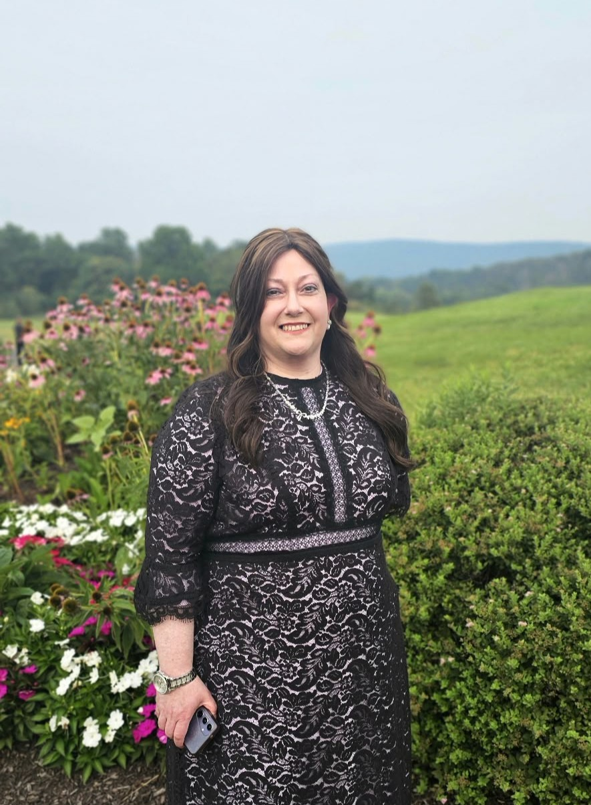

Photo of LorenI'm a licensed clinical social worker and trauma therapist. I'm also a mom of two, a wife, and a former local scout leader.
I believe therapy works best when you feel seen, not judged. I'll meet you where you are, help you look at what you're facing from a little more distance, and build on the strengths you already have. In your first couple of sessions, I aim to give you two or three practical skills you can start using right away.
My goal is simple: to help you get to the point where you no longer need me.
I spent many years as a radiographic technician, after studying at C.W. Post, Long Island University. Meeting people on what was often a hard day taught me how much a calm, patient presence matters.
Later, my child faced challenges with food allergies. I saw how much anxiety that brings to a whole family. I wanted to be there for people in that place and make it easier with real coping skills. So I started a support group, the Food Allergy Support Team (FAST), which grew into groups for children, teens, and adults, with guest speakers and a space where people could finally say what worried them out loud.
Running that group taught me how much it helps when someone makes room for you. That's the kind of therapist I try to be, and it's why my clients know I'll go the extra mile for them.
Outside of work, I'm busy with my family, and I was a local scout leader. I love being part of my community.
Licensed clinical social worker (LCSW), working with clients in New York, Florida, and Rhode Island.
Master of Social Work, Wurzweiler School of Social Work, 2018.
Certified in Trauma-Focused CBT (TF-CBT). Certificate from Allegheny Health Network and the Rowan University CARES Institute, 2021.
Many years as a radiographic technician, after studying at C.W. Post, Long Island University.
Clinical supervision for fellow therapists, and pre-surgery assessments for bariatric surgery.
The first conversation is free, and there's no pressure.
Request a consultation